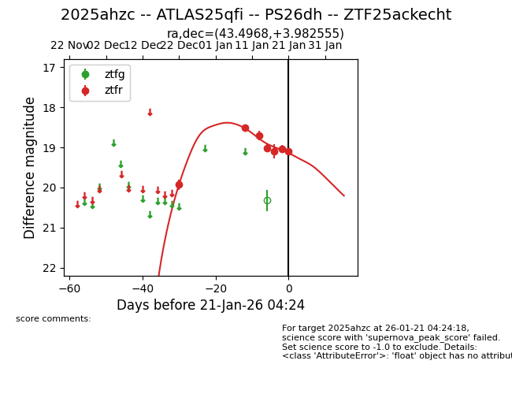
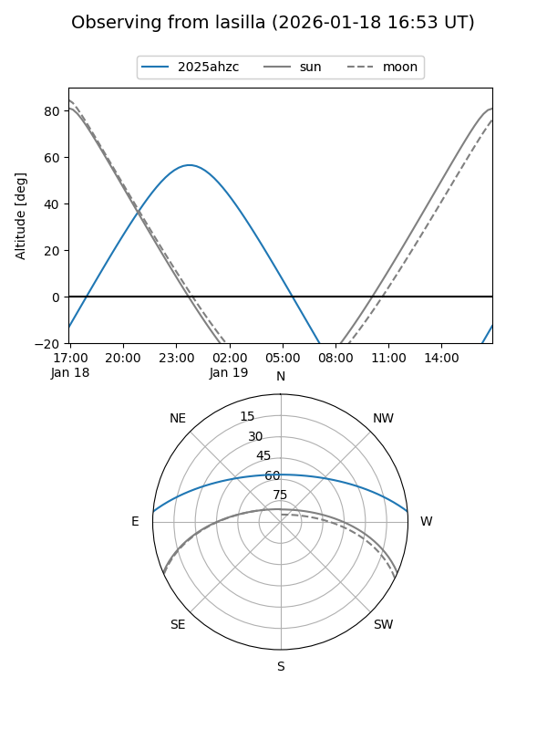
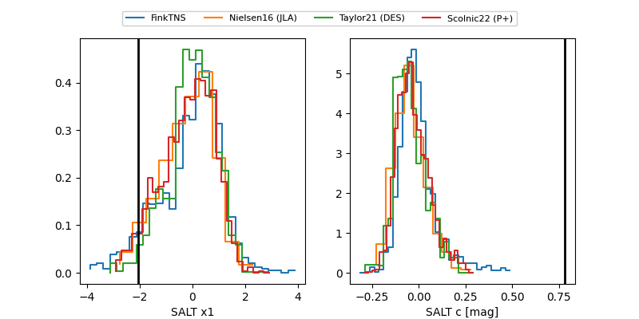

2025ahzc
Target 2025ahzc at 2026-01-23 07:36
Aliases and brokers:
FINK: link
Lasair: link
ALeRCE: link
TNS: link
YSE: link
alt names
ZTF25ackecht (ztf,fink_ztf)
2025ahzc (tns,yse)
ATLAS25qfi (atlas)
PS26dh (panstarrs)
Coordinates:
equatorial (ra, dec) = 43.4968,+3.98255
equatorial (HMS+DMS) = 02:53:59.23,+03:58:57.20
galactic (l, b) = (171.2159,-47.07421)
Flags:
Photometry:
last ztfr=19.09
7 ztfr detections
Lightcurve

Visibility


Additional plots
